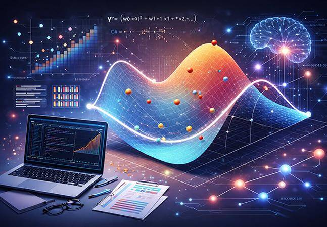
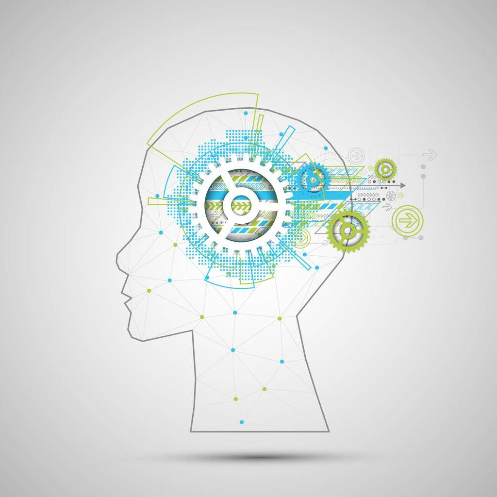
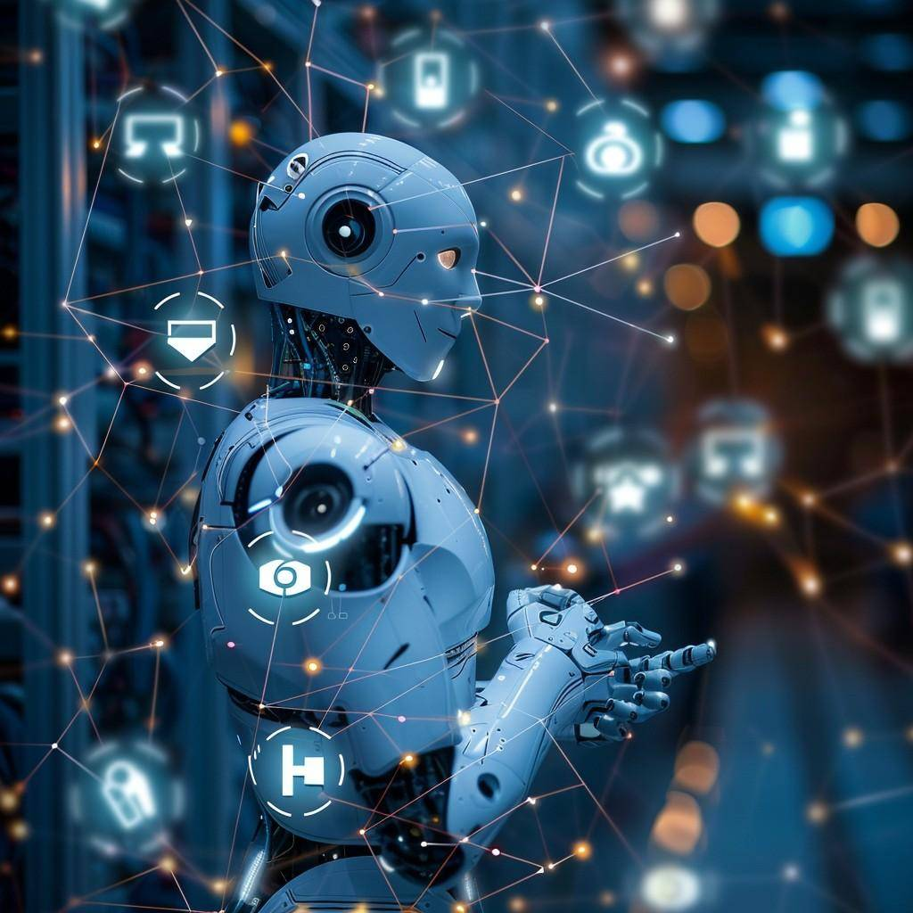

در سالهای اخیر، هوش مصنوعی به یکی از مهمترین فناوریهای جهان تبدیل شده است. از موتورهای جستجو گرفته تا شبکههای اجتماعی، خودروهای هوشمند و دستیارهای صوتی، همگی از فناوری هوش مصنوعی استفاده میکنند. پیشرفت سریع این فناوری باعث شده است که بسیاری از متخصصان، هوش مصنوعی را یکی از تأثیرگذارترین فناوریهای قرن بیستویکم بدانند.
امروزه شرکتهای بزرگ فناوری سرمایهگذاری گستردهای روی هوش مصنوعی انجام میدهند و کاربردهای آن هر روز در حال گسترش است.
هوش مصنوعی (Artificial Intelligence یا AI) شاخهای از علوم کامپیوتر است که هدف آن طراحی و توسعه سیستمهایی است که بتوانند وظایفی را انجام دهند که معمولاً به هوش انسانی نیاز دارند.
این وظایف شامل مواردی مانند:
به زبان ساده، هوش مصنوعی تلاش میکند کامپیوترها را قادر سازد تا مانند انسان فکر کنند، یاد بگیرند و تصمیم بگیرند.
هوش مصنوعی با استفاده از دادههای فراوان و الگوریتمهای پیشرفته آموزش میبیند. سیستم ابتدا دادهها را دریافت میکند، سپس الگوها را شناسایی کرده و بر اساس آنها تصمیم میگیرد یا پیشبینی انجام میدهد.
به عنوان مثال، اگر هزاران تصویر از گربه و سگ به یک مدل داده شود، پس از آموزش میتواند در تصاویر جدید نیز این حیوانات را تشخیص دهد.
امروزه هوش مصنوعی تقریباً در تمام صنایع مورد استفاده قرار میگیرد.
پزشکان از هوش مصنوعی برای تشخیص بیماریها، تحلیل تصاویر پزشکی و کمک به انتخاب روش درمان استفاده میکنند.
سیستمهای آموزشی هوشمند میتوانند محتوای مناسب هر دانشآموز را پیشنهاد دهند و روند یادگیری را شخصیسازی کنند.
بانکها از هوش مصنوعی برای تشخیص تراکنشهای مشکوک، جلوگیری از تقلب و ارائه خدمات هوشمند به مشتریان استفاده میکنند.
خودروهای خودران با استفاده از دوربینها، حسگرها و الگوریتمهای هوش مصنوعی محیط اطراف خود را تحلیل کرده و تصمیمگیری میکنند.
پیشنهاد پستها، ویدئوها و تبلیغات متناسب با علایق کاربران، با استفاده از الگوریتمهای هوش مصنوعی انجام میشود.
امروزه ابزارهای هوش مصنوعی میتوانند در نوشتن کد، پیدا کردن خطاها و ارائه پیشنهادهای برنامهنویسی به توسعهدهندگان کمک کنند.

با وجود مزایای فراوان، هوش مصنوعی چالشهایی نیز دارد:
به همین دلیل، توسعه مسئولانه و استفاده صحیح از هوش مصنوعی اهمیت زیادی دارد.
کارشناسان معتقدند که در سالهای آینده هوش مصنوعی نقش پررنگتری در زندگی انسانها خواهد داشت. پیشرفت در حوزههایی مانند پزشکی، آموزش، صنعت، حملونقل و رباتیک باعث خواهد شد بسیاری از خدمات سریعتر، دقیقتر و هوشمندتر ارائه شوند.
در کنار این پیشرفتها، یادگیری مهارتهای مرتبط با هوش مصنوعی نیز برای دانشجویان و برنامهنویسان اهمیت بیشتری پیدا خواهد کرد.
هوش مصنوعی یکی از پررونقترین حوزههای فناوری است و فرصتهای شغلی متعددی در آن وجود دارد. آشنایی با مباحثی مانند برنامهنویسی پایتون، یادگیری ماشین، پردازش داده و شبکههای عصبی میتواند مسیر ورود به این حوزه را هموار کند.
حتی اگر هدف شما متخصص شدن در هوش مصنوعی نباشد، آشنایی با مفاهیم آن به درک بهتر فناوریهای نوین و افزایش توانایی حل مسئله کمک میکند.

هوش مصنوعی یکی از مهمترین فناوریهای عصر حاضر است که در بسیاری از جنبههای زندگی روزمره و صنایع مختلف کاربرد دارد. این فناوری با تحلیل دادهها و یادگیری از تجربیات گذشته، میتواند وظایفی را انجام دهد که پیشتر تنها از انسان انتظار میرفت. با توجه به سرعت پیشرفت این حوزه، آشنایی با مفاهیم هوش مصنوعی برای دانشجویان مهندسی کامپیوتر و علاقهمندان به فناوری، یک سرمایهگذاری ارزشمند برای آینده شغلی و علمی محسوب میشود.